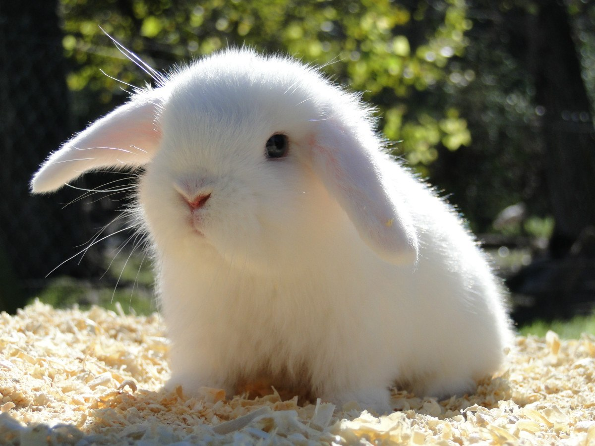

Existen cientos de razas con características variadas en tamaño,
temperamento y habilidades. Los perros poseen un agudo sentido
del olfato y el oído, lo que los hace ideales para tareas como
búsqueda y rescate, detección de sustancias y asistencia a
personas con discapacidad.
Son animales sociales que requieren cuidado, ejercicio y atención
para mantenerse sanos y felices. Su capacidad de formar vínculos
con los humanos los ha convertido en una de las especies más
queridas y cercanas al hombre.
Gatos
Los gatos (Felis catus) son mamíferos carnívoros domesticados que
han convivido con los humanos durante miles de años. Se caracterizan
por su agilidad, independencia y sentidos altamente desarrollados.
Poseen cuerpos flexibles, garras retráctiles y una excelente visión
nocturna, lo que los convierte en cazadores eficaces.
A lo largo de la historia, los gatos han sido valorados por su capacidad
para controlar plagas y por su compañía. Su comportamiento varía, pero en general
son animales curiosos, juguetones y, aunque pueden parecer distantes,
crean fuertes lazos con sus dueños.

Conejos
Los conejos (Oryctolagus cuniculus) son mamíferos herbívoros de la familia
Leporidae, conocidos por sus largas orejas, patas traseras poderosas y
dientes en constante crecimiento. Son animales ágiles y veloces, capaces de
dar grandes saltos gracias a su musculatura adaptada para la huida.
Existen muchas razas de conejos, desde los pequeños conejos enanos hasta
los grandes conejos gigantes de Flandes. Son animales sociales que pueden
vivir en grupos y comunicarse mediante movimientos corporales y sonidos
sutiles. En la naturaleza, suelen cavar madrigueras para refugiarse de
depredadores.
Sangrado intenso: Aplica presión directa con un paño limpio. Si es una pata, puedes hacer un vendaje compresivo sin cortar la circulación.
RCP canina (si no respira y no tiene pulso)
Comprueba signos vitales: Coloca tu mano en el pecho (detrás del codo izquierdo) para sentir el latido.
Respiración boca a hocico: Si no respira, estira su cuello, cierra la boca y sopla en sus fosas nasales cada 5 segundos.
Compresiones torácicas: Si no tiene pulso, coloca las manos en el tórax y presiona fuerte (1/3 del ancho del pecho) a un ritmo de 100-120 compresiones por minuto.
Intoxicaciones
No induzcas el vómito sin indicaciones del veterinario.
Si ha ingerido algo tóxico (chocolate, veneno, medicamentos), lleva el envase al veterinario.